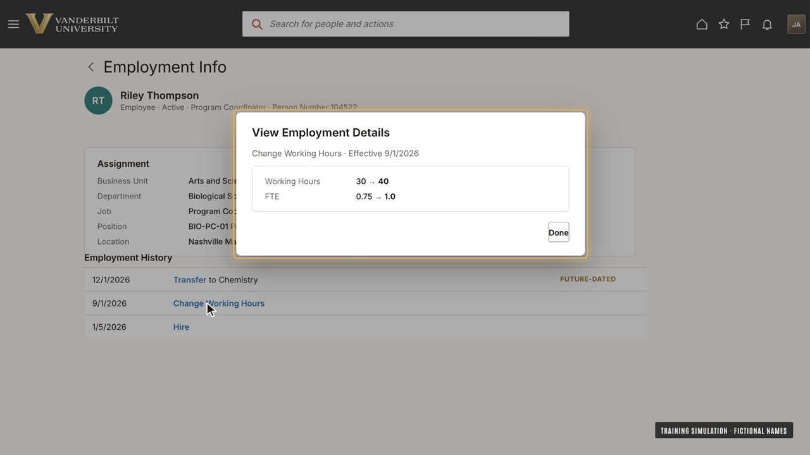
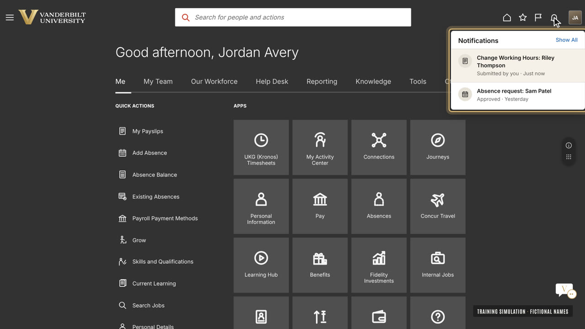
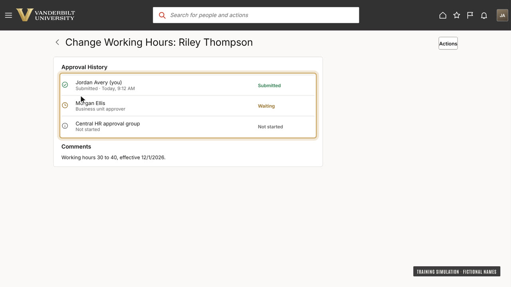
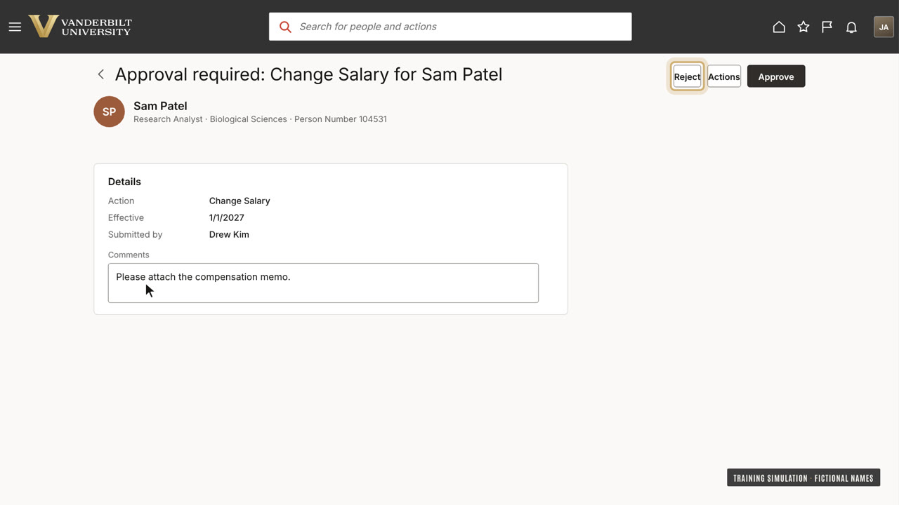
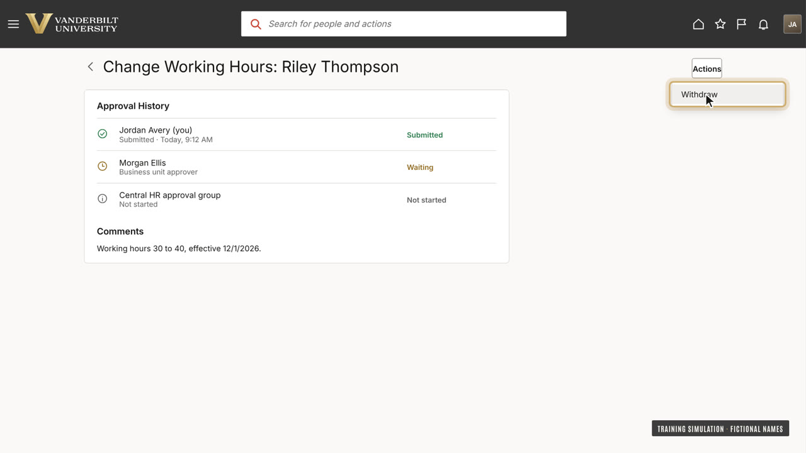
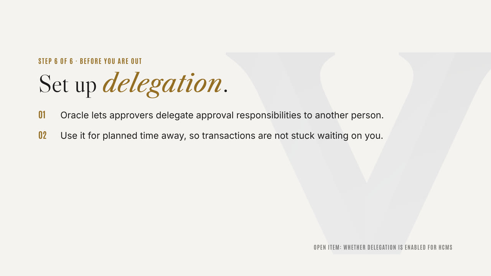

V.02 draftReviewed by a Vanderbilt SME in November 2026, and the review's changes are in. Confirm the open items before release.
Screen checkConfirm in Vanderbilt's Oracle or UKG during a recorded demo: How to view a record as of a past or future date on Redwood Employment Info; That Employment Info search accepts person number, and what columns the results show; That clicking a history entry opens View Employment Details in Vanderbilt's release; Exact action labels on the Redwood notification (Approve, Reject, Request More Information, Withdraw, Resubmit, Send back); Whether HCMs can withdraw their own transactions and delegate approvals in Vanderbilt's configuration; Vanderbilt approval chains by transaction type.
1 · Intro
When to use it.
Part 1Find a person in Oracle HCM
Watch first, then read the details below. Narrated, with the steps captioned on screen. A training simulation with fictional names, built from standard Oracle screens; Vanderbilt's screens may differ slightly.
Part 2Approvals and worklists in Oracle HCM
Watch first, then read the details below. Narrated, with the steps captioned on screen. A training simulation with fictional names, built from standard Oracle screens; Vanderbilt's screens may differ slightly.
Almost every HCM task starts the same way: open Our Workforce, pick a quick action, and search for the person. Before you change anything, read the Employment Info page so you know the current assignment and recent history.
Most transactions you submit do not take effect right away. They route to approvers, so know where to look, and what Withdraw and Request More Information do, to keep transactions from stalling before the payroll cutoff.
Use this whenYou need to look up a person, start a transaction for someone in your area, or check where a transaction you submitted is.
2 · Walk through
Find, read, and track.
Check off each item as you read.
Watch-outs
Do not start a transaction until you have confirmed the right person and the right assignment.
What you can see and do is controlled by your security role; a missing quick action usually means a role issue, not a system error.
Open item: confirm how HCMs view a record as of a past or future date on the Redwood Employment Info page at Vanderbilt.
Check the bell daily, and before every payroll cutoff. A transaction waiting on an approver is not in payroll yet.
Rejecting means the whole approval chain starts over after resubmission; send back or request information when a small fix is all that is needed.
If people or transactions in your area are missing, your access may need an area of responsibility. Your business unit approver requests it.
Open item: confirm Vanderbilt's approval chains by transaction type, whether delegation is enabled for HCMs, and the exact action labels on screen.
3 · Knowledge check
Check your understanding.
Six questions. You get feedback on each answer. All six right completes the course.
4 · Job aid
Keep it handy.
Two parts: a one-page quick guide, then a detailed job aid with a screenshot for every step. Print either one, or save it as a PDF.
Working in Oracle HCM: find a person, read the record, track approvals
Use when: You need to look up a person, start a transaction for someone in your area, or check where a transaction you submitted is. · System: Oracle HCM
From the Oracle Home page, open Our Workforce.
Click Show More to see every quick action.
Open Employment Info and search for the person.
Use person number when names are similar.
Read the assignment details.
Review the history of changes.
Check future-dated changes before you submit anything new.
Open the notifications bell at the top of Oracle.
Find a transaction you submitted and check its status.
Act on tasks assigned to you.
Use Request More Information or send back instead of rejecting for small fixes.
Withdraw your own transaction if you need to change it.
Withdraw is on by default in Oracle; your configuration may differ.
Set up delegation before you are out.
Watch-outs
Do not start a transaction until you have confirmed the right person and the right assignment.
What you can see and do is controlled by your security role; a missing quick action usually means a role issue, not a system error.
Open item: confirm how HCMs view a record as of a past or future date on the Redwood Employment Info page at Vanderbilt.
Check the bell daily, and before every payroll cutoff. A transaction waiting on an approver is not in payroll yet.
Rejecting means the whole approval chain starts over after resubmission; send back or request information when a small fix is all that is needed.
If people or transactions in your area are missing, your access may need an area of responsibility. Your business unit approver requests it.
Open item: confirm Vanderbilt's approval chains by transaction type, whether delegation is enabled for HCMs, and the exact action labels on screen.
V.02 draft, updated Nov 18, 2026. Owner: HRIS. Sources: Oracle: Overview of Quick Actions; Oracle: Enhanced Redwood Person Search (25A); Oracle: Manage Salary Info from Redwood View Employment Details Page (24D); Oracle: Approval Management Configuration Options for Oracle Fusion Human Capital Management; Oracle: How You Define Approvals for Human Capital Management; Oracle: Worklist and Email Notifications.Questions: pcb@vanderbilt.edu
HCM Academy detailed job aid · Start Here
Working in Oracle HCM: find a person, read the record, track approvals, step by step
Step by step with screenshots. Screens from the HCM Academy training simulation of Oracle HCM. Names are fictional; check labels against Vanderbilt's Oracle.
01From the Oracle Home page, open Our Workforce.
Our Workforce is Vanderbilt's name for Oracle's My Client Groups. It holds the quick actions for people in your area.
02Click Show More to see every quick action.
Only a few quick actions show at first. Show More lists all of them, grouped by area (for example, Employment). Which actions you see depends on your security role.
03Open Employment Info and search for the person.
Search by name or person number. Person number is the safest way to avoid picking the wrong person with a similar name. Check the person type and status in the results before you select.
04Read the assignment details.
Employment Info shows the work relationship and assignment: business unit, department, job, position, location, manager, working hours, and assignment status. If the person has more than one assignment, make sure you are on the right one.
05Review the history of changes.
Employment Info lists date-effective historical changes. Click an entry to open View Employment Details and see exactly what changed on that date, including salary when it changed at the same time.

06Check future-dated changes before you submit anything new.
Oracle records are date effective. A pending or future-dated change (such as a transfer next month) can affect what you are about to submit. If you see one, coordinate before acting.
07Open the notifications bell at the top of Oracle.
Click the bell icon at the top right of any Oracle page. It lists approval tasks and FYI notifications. Select Show All (or the notifications page) to see the full list with filters.

08Find a transaction you submitted and check its status.
Open the notification for your transaction to see the approval history: who has approved, who it is waiting on, and any comments. A transaction is not final until all approvers have acted.

09Act on tasks assigned to you.
Open the task, review the details, and choose the action, such as Approve or Reject. Add a comment when you reject or ask for changes so the requester knows what to fix.

10Use Request More Information or send back instead of rejecting for small fixes.
Oracle approvals let an approver ask the requester or another approver for more information, and the task returns after it is answered. A rejected transaction must be resubmitted and the approval process repeats.
11Withdraw your own transaction if you need to change it.
While approval is still in progress, the requester can withdraw the transaction. Approvers who have not acted have it removed from their worklists; those who already acted are notified. Fix it and resubmit.

12Set up delegation before you are out.
Oracle lets approvers delegate approval responsibilities to another person. Use it for planned time away so transactions are not stuck waiting on you.

V.02 draft, updated Nov 18, 2026.Questions: pcb@vanderbilt.edu
Course record
Owner and changes.
Owner
HRISRecruiting and hiring, assignment changes, offboarding, leave, records and reporting, and the HCM foundations.
Version
V.02 draftUpdated Nov 18, 2026
Review
Reviewed by a Vanderbilt SME in November 2026, and the review's changes are in. Confirm the open items before release.
What changed
Nov 18, 2026Oracle HCM Workflow and Worklists is now part of this course, as Part 2.
Nov 18, 2026From the SME review: documentation links that did not help HCMs removed.
Nov 18, 2026Added a narrated video and a detailed job aid with a picture for each step.
Nov 13, 2026Owner is now HRIS. It had no owner yet.